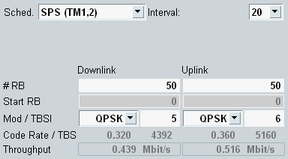

Most parameters for semi-persistent scheduling can only be configured from the main view, not from the configuration tree.

To configure SPS, proceed as follows:
Select the cell bandwidth. See "Physical Cell Setup".
Select the scheduling type SPS.
Select the subframe interval.
Select the number of allocated resource blocks (RB), the position of the first RB and the modulation type.
Select the transport block size index.
For valid parameter combinations and background information, see "Semi-Persistent Scheduling (SPS)".
The parameters are described in the following. Option R&S CMW-KS510 is required.
Selects the scheduling type, see "Scheduling Type".
Configures the subframe periodicity n. The UE is granted the configured RB allocation in every nth subframe.
For TDD, only multiples of radio frames are allowed. For that reason, the selected value is internally rounded down to a multiple of 10. Example: 128 selected means 120.
Remote command:"# RB" selects the number of allocated resource blocks.
"Start RB" specifies the number of the first allocated resource block. This parameter allows you to shift the allocated RBs within the cell bandwidth.
"Mod" selects the modulation type. The setting influences the allowed transport block size indices.
"TBSI" selects the transport block size index. "TBS" displays the resulting transport block size in bits.
Remote command:Effective channel code rate, i.e. the number of information bits (including CRC bits) divided by the number of physical channel bits on PDSCH/PUSCH.
Remote command:Expected maximum throughput in Mbit/s (averaged over one frame).
Remote command: